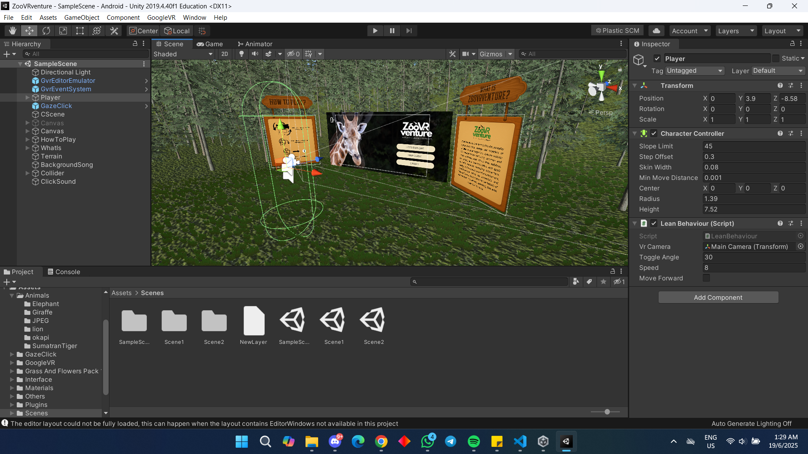
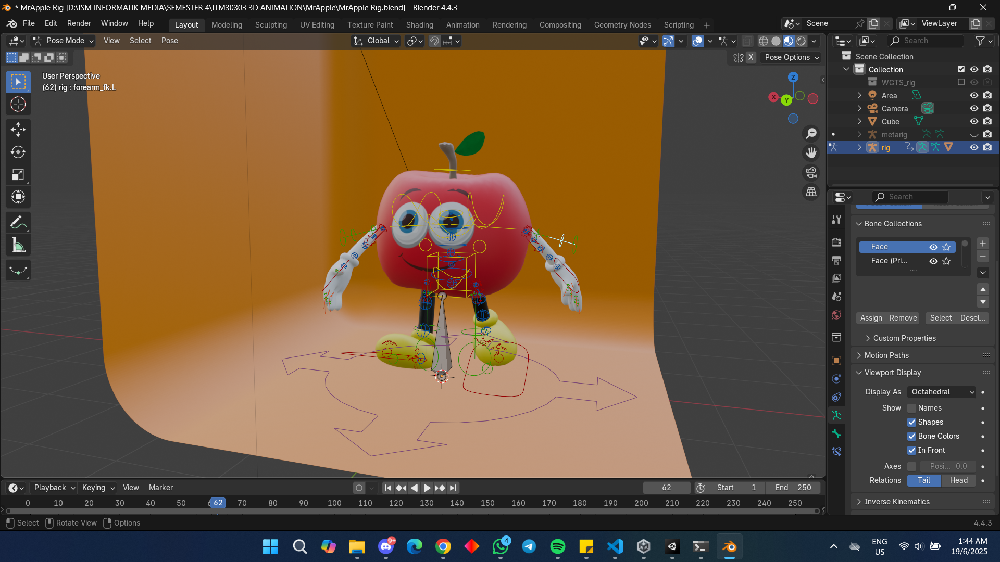
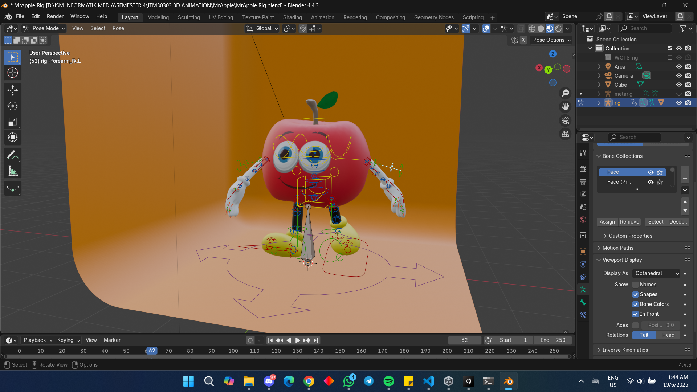
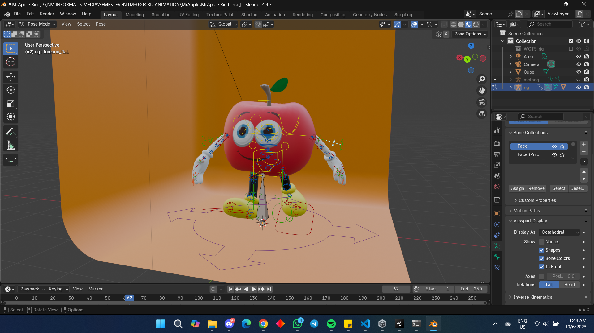

Here you'll find a comprehensive collection of my creative projects in graphic design, 3D modeling, and interactive development. Click on each project to see more details and download relevant files!
My Projects
Project Title: ZooVRventure – An Immersive Virtual Zoo Experience
A final year project developed in Unity that lets users explore a realistic virtual zoo with 3D animal models and educational content, highlighting skills in VR and interactive design.

About This Project:
ZooVRventure is an innovative virtual reality application designed to provide an accessible and engaging educational experience. Built with Unity, it features meticulously crafted 3D models of various animals in their naturalistic habitats, accompanied by detailed information. Users can navigate freely, observe animal behaviors, and learn about biodiversity. This project involved extensive work in 3D asset creation, environment design, C# scripting for interactive elements, and VR optimization.
Project Title: 3D Character Modeling & Rigging – Mr. Apple
A stylized 3D character project featuring Mr. Apple, created in Blender. This includes modeling, texturing, and full-body rigging for animation. Highlights my skills in character design, rigging, and 3D workflow.

About This Project:
Mr. Apple is a whimsical 3D character brought to life in Blender, showcasing a complete character pipeline from concept to animation readiness. The project focused on creating a visually appealing, low-poly model with efficient topology, followed by detailed texturing. A crucial aspect was developing a robust and intuitive rigging system, including custom controls for facial expressions and body movements, ensuring the character is production-ready for various animated scenarios.
A comprehensive system developed to streamline clinic operations for clerks, doctors, and pharmacists. It offers various functions including medicine stock updates, patient management, and prescription handling.
About This Project:
The Sejahtera Clinic Management System is a robust web-based solution designed to enhance the efficiency of daily clinic operations. It provides distinct modules tailored to the needs of different healthcare professionals within a clinic environment.
Key Features:
**Clerk Module:** Manages patient registrations, appointments, and basic patient information.
Project Title: Student Task Management System Interface
An intuitive user interface designed in Figma for a student task management system. It provides features for students to manage tasks and submissions, and for lecturers to create tasks and view student submissions.
About This Project:
This project focuses on the user experience (UX) and user interface (UI) design of a student task management system. Developed using Figma, the interface aims to simplify academic task organization for students and streamline assignment management for lecturers. The design prioritizes ease of navigation, clear information hierarchy, and visual appeal to enhance productivity for both user groups.
Key Features:
**Student Features:** Task viewing and tracking, assignment submission, personal dashboard with progress overview.
A collaborative project with UniSZA Esports Club to design a full streaming interface for a Valorant tournament as part of the UniSZA "E-Saf" event, including in-game, waiting lobby, and caster interfaces.
About This Project:
This project involved designing a comprehensive set of streaming overlays and interfaces specifically tailored for a Valorant esports tournament. The collaboration with UniSZA Esports Club aimed to create a professional and engaging broadcast experience for the E-Saf event. The design encompassed various scenes necessary for a live stream, ensuring a consistent visual identity and seamless presentation throughout the tournament.
Key Interface Components:
**In-Game Interface:** Custom overlays for live match broadcasts, displaying scores, team names, player statistics, and match information.
**Waiting Lobby Interface:** Visually appealing screens for pre-match, inter-round, and post-match breaks, often including sponsor logos, upcoming matches, and team lineups.
**Caster Interface:** Dedicated layouts for commentators, allowing them to be prominently featured alongside game footage or analysis, often with their names and titles displayed.
Consistent branding elements (logos, color schemes, typography) integrated across all interfaces.
Dynamic elements designed for easy updates of scores, player names, and other real-time data.
Software Used:
(Specify design software used, e.g., Adobe Photoshop, Adobe Illustrator, Figma, OBS Studio for integration concepts)

 
